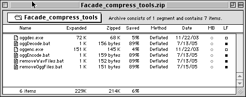

Compressing Facade
These instructions describe how to compress Facade's many .wav files using Ogg Vorbis.
At maximum compression (and lowest quality), this technique can reduce the download size to nearly one quarter of its original size (I achieved a size of 211 MiB).
Higher quality settings are also possible, and of course there is a quality-size trade-off.
I was unable to hear the difference between the original audio and the lowest-quality OGG files, at least with my speakers and my ears.
Keep in mind that voices, with their limited frequency ranges, are very compressible using psycho-acoustic methods like Ogg Vorbis and MP3. Quality settings that would produce unacceptable results for music are often fine for voice.
On the other hand, I only comparison-tested a small subset of the voice audio files.
Transient broad-band sounds, like coughs, breathing, or sighs might contain audible compression artifacts at the lowest quality setting.
Tools
Download Facade_compress_tools.zip and unzip it.
The following screen shot shows the contents of this ZIP archive:

The files oggenc.exe and oggdec.exe are the standard-issue encoding and decoding command-line tools provided by the Ogg Vorbis project.
The files oggEncode.bat and oggDecode.bat are DOS batch scripts that I wrote to process all of Facade's WAV files, converting them to and from OGG files.
Finally, the removeWavFiles.bat and removeOggFiles.bat scripts can be used to "clean" the Facade directory, removing the WAV files or OGG files as needed.
Compression Procedure
To compress Facade using my default quality settings (-q 0, or lowest quality), do the following:
- copy all six files from the ZIP archive into the Facade folder (probably C:\Facade, if you're working with a standard installation)
- run oggEncode.bat
- wait for a while (it may take a few hours)
- run removeWavFiles.bat
- wait for a bit (it may take a few minutes)
At this point, you will have a Facade installation that contains OGG files in place of the original WAV files.
You can now clean up the Facade directory a bit, if you want (remove oggEncode.bat, oggenc.exe, and removeWavFiles.bat).
Make sure to leave the oggDecode.bat and oggdec.exe files in place---these will be needed post-download to reconstruct the WAV files.
The simplest course of action would be to package up this new, OGG-ified Facade as-is and simply instruct users to run oggDecode.bat before trying to run Facade.
Another option is to augment your installer to run oggDecode.bat as a final step.
After decoding, the installer can reduce disk space by running removeOggFiles.bat and then restore the original Facade directory by automatically deleting oggDecode.bat, oggdec.exe, and removeOggFiles.bat.
Adding the decompression step should not increase the install time by much, since the installer will save time when unpacking and copying the smaller OGG files.
Play Testing
To test your OGG-ified Facade for sound quality, simply run oggDecode.bat to reconstruct the WAV files.
This decoding process should be much faster than the encoding process.
After decoding, you can play Facade with the new WAV files and listen for quality issues.
If the lowest quality setting produces unacceptable results, you will need to adjust oggEncode.bat to specify a higher quality setting.
Details are given below.
The Anatomy of oggEncode.bat
The text of oggEncode.bat is as follows:
for %%x in (util\sources\facade\Sounds\global\*.wav) do oggenc -q 0 %%x
for %%x in (util\sources\facade\Sounds\grace\01\*.wav) do oggenc -q 0 %%x
for %%x in (util\sources\facade\Sounds\grace\02\*.wav) do oggenc -q 0 %%x
for %%x in (util\sources\facade\Sounds\grace\03\*.wav) do oggenc -q 0 %%x
for %%x in (util\sources\facade\Sounds\grace\04\*.wav) do oggenc -q 0 %%x
for %%x in (util\sources\facade\Sounds\grace\05\*.wav) do oggenc -q 0 %%x
for %%x in (util\sources\facade\Sounds\grace\06\*.wav) do oggenc -q 0 %%x
for %%x in (util\sources\facade\Sounds\grace\07\*.wav) do oggenc -q 0 %%x
for %%x in (util\sources\facade\Sounds\grace\08\*.wav) do oggenc -q 0 %%x
for %%x in (util\sources\facade\Sounds\grace\09\*.wav) do oggenc -q 0 %%x
for %%x in (util\sources\facade\Sounds\trip\01\*.wav) do oggenc -q 0 %%x
for %%x in (util\sources\facade\Sounds\trip\02\*.wav) do oggenc -q 0 %%x
for %%x in (util\sources\facade\Sounds\trip\03\*.wav) do oggenc -q 0 %%x
for %%x in (util\sources\facade\Sounds\trip\04\*.wav) do oggenc -q 0 %%x
for %%x in (util\sources\facade\Sounds\trip\05\*.wav) do oggenc -q 0 %%x
for %%x in (util\sources\facade\Sounds\trip\06\*.wav) do oggenc -q 0 %%x
for %%x in (util\sources\facade\Sounds\trip\07\*.wav) do oggenc -q 0 %%x
for %%x in (util\sources\facade\Sounds\trip\08\*.wav) do oggenc -q 0 %%x
for %%x in (util\sources\facade\Sounds\trip\09\*.wav) do oggenc -q 0 %%x
for %%x in (util\sources\facade\Sounds\trip\10\*.wav) do oggenc -q 0 %%x
|
Each line in this file is a for loop that processes all of the WAV files in a given sub-directory.
%%x is the loop variable---each time through the loop, it represents a different file in the sub-directory.
Thus, in each loop body, we are calling oggenc -q 0 on a WAV file.
For example, a given loop iteration might execute:
oggenc -q 0 util\sources\facade\Sounds\global\blender.wav
The -q 0 flag specifies the quality, which can range from 0 to 10.
Thus, to increase the quality of the encoding to 5, you would replace all of the -q 0 flags with -q 5 in oggEncode.bat.
The new text of the batch file would be as follows:
for %%x in (util\sources\facade\Sounds\global\*.wav) do oggenc -q 5 %%x
for %%x in (util\sources\facade\Sounds\grace\01\*.wav) do oggenc -q 5 %%x
for %%x in (util\sources\facade\Sounds\grace\02\*.wav) do oggenc -q 5 %%x
for %%x in (util\sources\facade\Sounds\grace\03\*.wav) do oggenc -q 5 %%x
for %%x in (util\sources\facade\Sounds\grace\04\*.wav) do oggenc -q 5 %%x
for %%x in (util\sources\facade\Sounds\grace\05\*.wav) do oggenc -q 5 %%x
for %%x in (util\sources\facade\Sounds\grace\06\*.wav) do oggenc -q 5 %%x
for %%x in (util\sources\facade\Sounds\grace\07\*.wav) do oggenc -q 5 %%x
for %%x in (util\sources\facade\Sounds\grace\08\*.wav) do oggenc -q 5 %%x
for %%x in (util\sources\facade\Sounds\grace\09\*.wav) do oggenc -q 5 %%x
for %%x in (util\sources\facade\Sounds\trip\01\*.wav) do oggenc -q 5 %%x
for %%x in (util\sources\facade\Sounds\trip\02\*.wav) do oggenc -q 5 %%x
for %%x in (util\sources\facade\Sounds\trip\03\*.wav) do oggenc -q 5 %%x
for %%x in (util\sources\facade\Sounds\trip\04\*.wav) do oggenc -q 5 %%x
for %%x in (util\sources\facade\Sounds\trip\05\*.wav) do oggenc -q 5 %%x
for %%x in (util\sources\facade\Sounds\trip\06\*.wav) do oggenc -q 5 %%x
for %%x in (util\sources\facade\Sounds\trip\07\*.wav) do oggenc -q 5 %%x
for %%x in (util\sources\facade\Sounds\trip\08\*.wav) do oggenc -q 5 %%x
for %%x in (util\sources\facade\Sounds\trip\09\*.wav) do oggenc -q 5 %%x
for %%x in (util\sources\facade\Sounds\trip\10\*.wav) do oggenc -q 5 %%x
|
I hope that my work on this will help more people experience Facade.
|